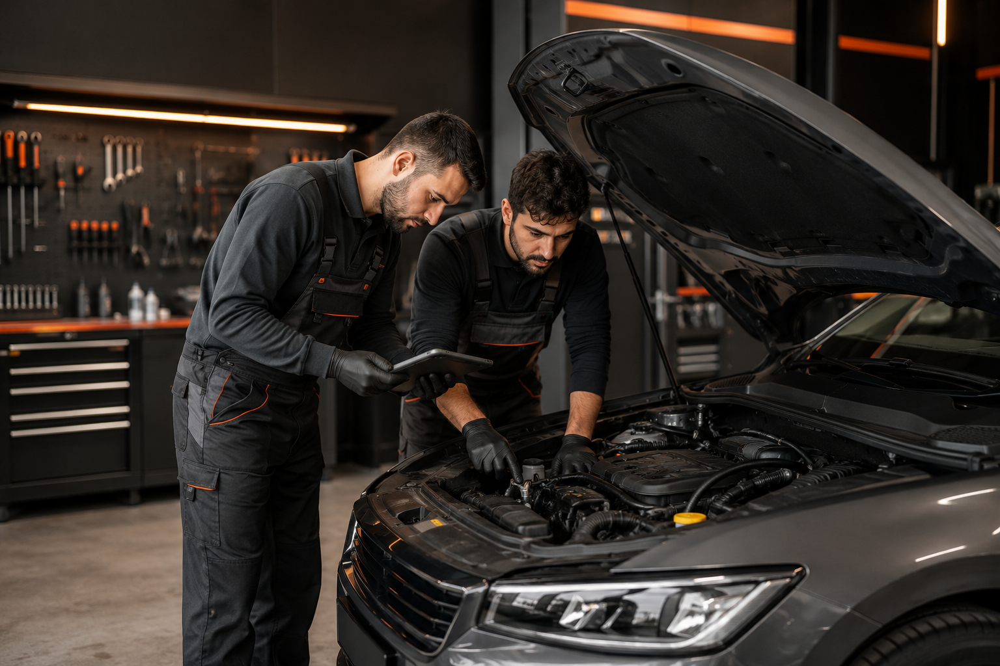
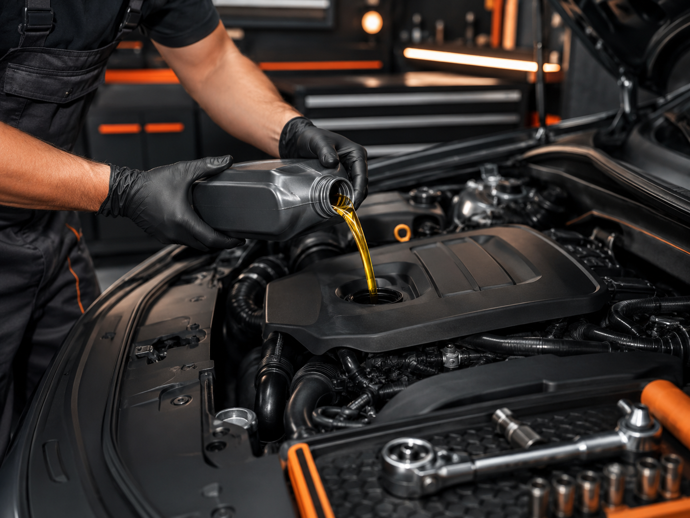
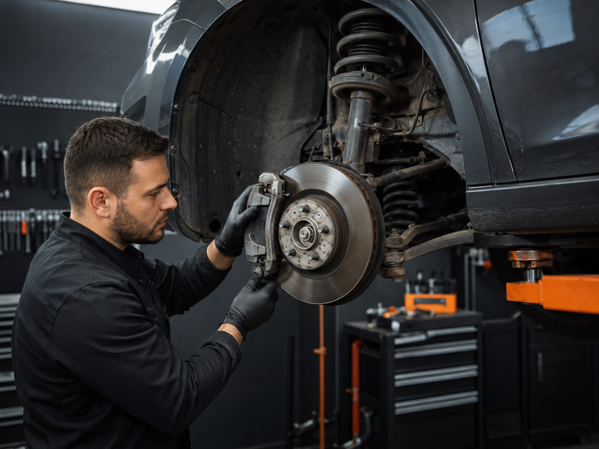
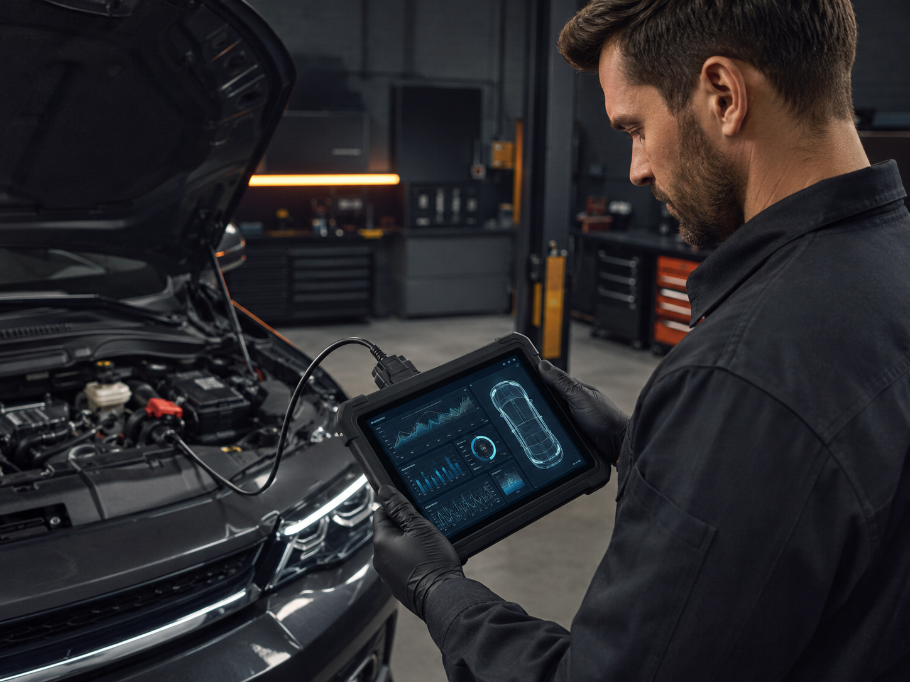

Kocaeli'nin Güvenilir Oto Servis ve Bakım Merkezi
Modern arıza tespit cihazları, uzman kadro ve kaliteli yedek parça garantisiyle aracınız güvende.
Hakkımızda
Aslan Oto Servis olarak Kocaeli'de uzun yıllara dayanan tecrübemizle tüm marka ve model binek ile hafif ticari araçlara profesyonel servis hizmeti sunmaktayız.
Müşteri memnuniyetini ve güvenini her zaman ilk sırada tutarak, aracınızın arızalarını en doğru şekilde tespit ediyor, zamanında ve şeffaf bir hizmet garantisi veriyoruz. Teknolojik gelişmeleri yakından takip eden uzman ekibimizle aracınızın performansını ve güvenliğini en üst düzeyde tutuyoruz.

Hizmetlerimiz
Aracınızın tüm bakım ve onarım ihtiyaçları için profesyonel çözümler sunuyoruz.

Periyodik Bakım
Aracınızın ömrünü uzatmak ve sürüş güvenliğini sağlamak için filtre değişimleri ve genel kontroller eksiksiz yapılır.
Yağ Değişimi
Motor yapısına uygun kaliteli motor yağları ve orijinal filtreler ile performans optimizasyonu sağlanır.

Fren Sistemi Bakımı
Fren balatası, disk değişimi, fren hidroliği kontrolü ve güvenli duruş mesafesi için hassas ayarlamalar.
Motor Arıza & Onarım
Motor mekanik arızaları, triger seti değişimi, conta ve ağır bakım işlemleri titizlikle yürütülür.

Bilgisayarlı Arıza Tespiti
Son teknoloji diyagnostik cihazlar ile aracınızın elektronik ve mekanik arızaları noktasal tespitle çözülür.
Klima Bakımı & Gaz Dolumu
Klima gazı dolumu, kaçak tespiti, polen filtresi değişimi ve antibakteriyel klima temizliği.
Akü Değişimi & Ölçüm
Akü şarj durumu kontrolü, kutup başı temizliği ve garantili sıfır akü satış ve montaj hizmeti.
Neden Bizi Tercih Etmelisiniz?
👨🔧 Uzman ve Deneyimli Kadro
Alanında eğitimli ve tecrübeli ustalarımızla aracınıza en doğru müdahaleyi yapıyoruz.
🔍 Şeffaf Fiyatlandırma
Sürpriz maliyetler yok! Yapılacak tüm işlemler öncesinde onayınıza sunulur.
⚡ Hızlı Teslimat
Zamanınızın değerli olduğunu biliyoruz. Bakım ve tamir işlemlerini taahhüt edilen sürede tamamlıyoruz.
🛡️ Orijinal ve Kaliteli Parça
Aracınızın güvenliği için sadece standartlara uygun ve kaliteli yedek parçalar kullanıyoruz.
Müşteri Yorumları
"Kocaeli'de gidilebilecek en dürüst oto servis. Bilgisayarlı arıza tespiti ile diğer servislerin bulamadığı sorunu hemen çözdüler. Teşekkürler Aslan Oto!"
"Periyodik bakım ve fren değişimi için tercih ettim. İşçilik çok temiz, fiyatlar makul ve çay ikramları için ayrıca teşekkür ederim."
"Klima gazı dolumu ve bakımı yaptırdım. İlk günden beri buz gibi soğutuyor. Güler yüzlü hizmet ve tam zamanında teslimat."
Sık Sorulan Sorular
Genel periyodik bakım ortalama 1.5 - 2 saat sürmektedir. Randevu alarak gelmeniz durumunda bekleme süreniz minimuma iner.
Yoğunluk yaşamamanız ve aracınızın bakımına hemen başlanabilmesi için gelmeden önce telefon veya WhatsApp üzerinden randevu almanız tavsiye edilir.
Evet, servisimizde kullandığımız tüm sıfır yedek parçalar üretici ve imalatçı garantisi altındadır.
Nakit, kredi kartı ve banka havalesi / EFT ile ödeme kabul etmekteyiz.
İletişim & Konum
İletişim Bilgileri
Aracınızla ilgili her türlü soru, fiyat teklifi ve randevu talebi için bizimle iletişime geçebilirsiniz.
Sanayi Mahallesi, Oto Sanayi Sitesi, Kocaeli
Pazartesi - Cumartesi: 08:30 - 19:00
Pazar: Kapalı